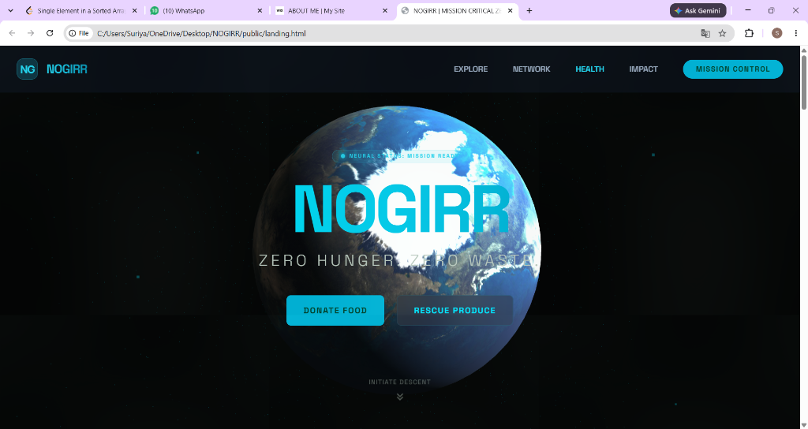
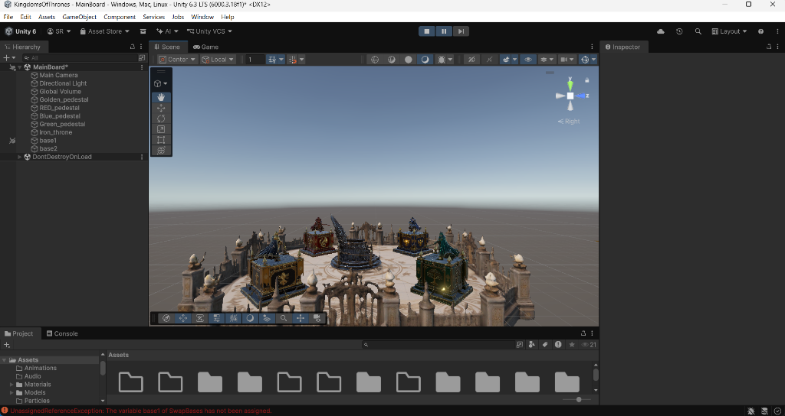
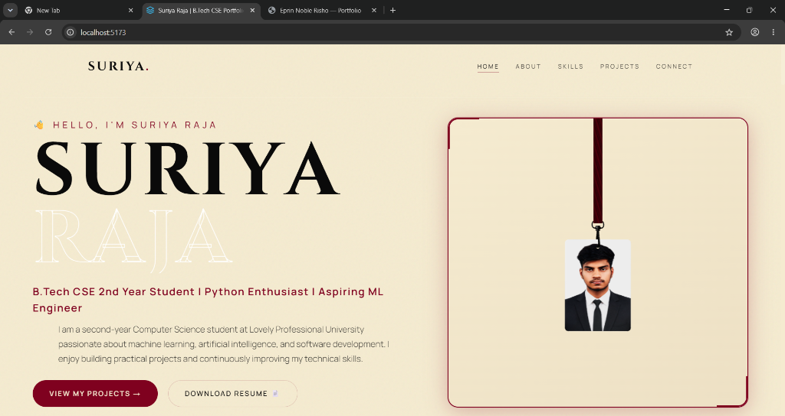
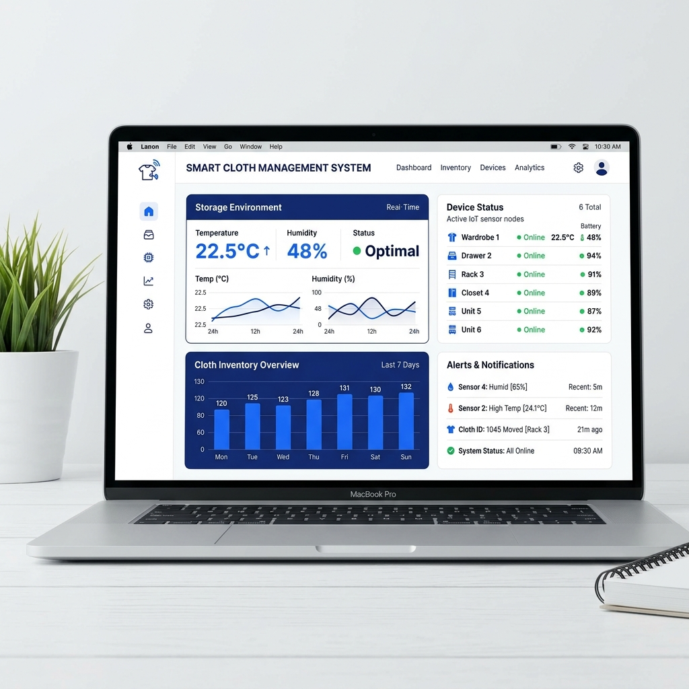

Projects Showcase
Deep dive into technical architectures, hardware sensor integration, web platforms, and game development built by Suriya Raja.

Food Waste Management Platform (NOGIRR)
P — Problem Statement
Organizations and individuals find it difficult to track surplus food resources efficiently, leading to avoidable food waste.
T — Technology Stack
Next.js, React, JavaScript, Node.js, REST API, Vercel
R — Result & Solution
Developed NOGIRR, a live web platform that allows users to log surplus food items, track inventory in real time, run search queries, and manage donor-recipient transactions seamlessly.
L — Key Learnings
Mastered full-stack web architecture, live deployment on Vercel, geolocation search, and inventory state management.

Kingdom of Thrones Game
P — Problem Statement
Designing engaging strategy game mechanics with smooth unit pathfinding, interactive UI, and balanced resource management systems.
T — Technology Stack
Unity Engine, C#, Game Design, Object-Oriented Programming (OOP), Physics Engine
R — Result & Solution
Developed an interactive strategy kingdom game featuring resource collection, kingdom expansion, unit spawning, and tactical battle mechanics.
L — Key Learnings
Mastered Unity game loop architecture, C# object-oriented design patterns, state machines, game physics, and interactive UI scripting.

Tikki Topple Game
P — Problem Statement
Designing a strategic Tiki totem placement game with dynamic player action cards, opponent positioning, and tactical round scoring.
T — Technology Stack
Unity Engine, C#, 3D Rendering, Game State Logic
R — Result & Solution
Developed Tikki Topple, a strategy game featuring 3D totem aesthetics, action cards, opponent placement, and round-based scoring loops.
L — Key Learnings
Gained hands-on experience in turn-based game state management, 3D camera controls, card-driven game loops, and UI turn feedback.

Smart Cloth Management System
P — Problem Statement
Managing fabric storage manually is time-consuming and risks textile damage due to undetected temperature, humidity, and gas buildup.
T — Technology Stack
ESP32 Microcontroller, Arduino, Embedded C++, DHT Sensors, Gas Sensors, Web Dashboard
R — Result & Solution
Developed an automated IoT hardware system that continuously acquires sensor telemetry, triggers automated ventilation control, and visualizes real-time storage status on a responsive web portal.
L — Key Learnings
Gained hands-on experience in microcontroller sensor interfacing, real-time feedback loops, embedded C++, and IoT-to-web telemetry data flow.